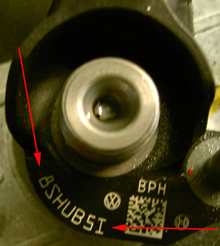

Due to tolerances when manufacturing the injectors the injected fuel quantity may deviate between the actual and calculated fuel quantity. After manufacture these deviations are determined for every injector and a calibration value is determined, the value is converted to a 7-character code that is stamped on the injectors. This code is programmed in the engine control unit for each cylinder. Using these codes, the engine control unit corrects the calculated fuel quantity individually for each cylinder and thus improves engine operation and exhaust emissions. With this function, new calibration values can be entered in the engine control unit when replacing injectors or engine control unit.
When replacing one or more injectors these shall be adapted to the engine control unit.
When replacing engine control unit, all injectors shall be adapted to the new control unit.
The 7-character code is stamped on the injectors and may include both letters and numbers, see figure.

Test conditions:
Ignition on, engine off.
No faults in the system.
Procedure:
Select the function "Injector programming", press "OK".
The function starts and the existing code for each cylinder is shown.
If the value is to be changed for any cylinder, press "YES". Press "NO" to cancel the function.
Select the cylinder for which the value is to be changed, press "OK".
A dialogue box is shown. Enter the 7-character code, press "OK".
For successful adaptation, "Adaptation done" is shown, press "OK" to continue.
If "operation failed" is shown, check the code.
Codes for all cylinders are shown again, check that the new code for selected cylinder is saved.
If additional cylinders are to be adapted, press "YES" to select a new cylinder, if no other cylinders are to be adapted press "NO" to exit the function.
After finished function, finish communication with car, turn off the ignition for 30 seconds, turn on the ignition, re-establish communication with car, and check that no fault codes are stored.